มอนสเตอร์ (143)
แตะหัวตารางเพื่อเรียง · กรองตามชื่อ เลเวล ธาตุ เผ่า ขนาด
| ชื่อ | Lv | HP | EXP | ธาตุ | เผ่า | ขนาด | DEF | พบที่ |
|---|---|---|---|---|---|---|---|---|
 สไลม์ สไลม์ | 1 | 55 | 150 | น้ำ 1 | ไร้รูป | เล็ก | 2 | ทุ่งหญ้าสายลม, ทุ่งดอกไม้ผึ้งหวาน |
 กระต่ายขนฟู กระต่ายขนฟู | 3 | 48 | 150 | ไร้ธาตุ 3 | สัตว์ | เล็ก | 18 | ทุ่งหญ้าสายลม, ลานป่าโบราณ |
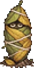 ดักแด้ใบไม้ | 4 | 51 | 157 | ดิน 1 | แมลง | เล็ก | 24 | ทุ่งดอกไม้ผึ้งหวาน |
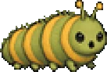 หนอนใบไม้ | 6 | 59 | 158 | ดิน 1 | แมลง | เล็ก | 24 | ทุ่งหญ้าสายลม, ทุ่งดอกไม้ผึ้งหวาน |
 สไลม์ทราย สไลม์ทราย | 9 | 70 | 154 | ดิน 1 | ไร้รูป | เล็ก | 21 | ทะเลทรายลมร้อน |
| ผึ้งน้อย | 11 | 85 | 158 | ลม 1 | แมลง | เล็ก | 7 | ลานป่าโบราณ, ทุ่งดอกไม้ผึ้งหวาน |
| ซาลาแมนเดอร์ลำธาร | 13 | 140 | 162 | น้ำ 1 | สัตว์น้ำ | กลาง | 12 | ริมธารแมลงปอ |
| ลูกโอ๊กจอมเกเร | 13 | 140 | 170 | ดิน 3 | พืช | เล็ก | 13 | ลานป่าโบราณ |
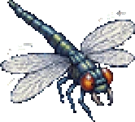 แมลงปอยักษ์ | 15 | 155 | 174 | ดิน 1 | แมลง | กลาง | 16 | ริมธารแมลงปอ |
| ราชาสไลม์ MVP | 15 | 16,555 | 2,700 | น้ำ 2 | ไร้รูป | ใหญ่ | 7 | |
| ซอมบี้ | 17 | 204 | 189 | อมตะ 1 | อมตะ | กลาง | 20 | ถ้ำวิญญาณ ชั้น 1 |
| หินจิ๋ว | 19 | 265 | 178 | ดิน 1 | ไร้รูป | เล็ก | 28 | ลานป่าโบราณ |
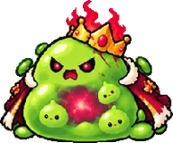 ไซรอน ผู้พิทักษ์ประตู บอส | 20 | 600,000 | 3,000 | น้ำ 3 | ไร้รูป | ใหญ่ | 9 | |
| ปูเสฉวน | 21 | 212 | 188 | น้ำ 1 | สัตว์น้ำ | เล็ก | 22 | หาดเปลือกหอย |
| นกนางนวลขี้แย่ง | 23 | 247 | 196 | ลม 1 | สัตว์ | เล็ก | 28 | หาดเปลือกหอย |
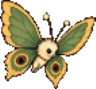 ผีเสื้อป่า | 23 | 247 | 196 | ลม 1 | แมลง | เล็ก | 28 | ริมธารแมลงปอ |
 แมงป่องทราย แมงป่องทราย | 23 | 337 | 205 | ดิน 1 | แมลง | เล็ก | 28 | ทะเลทรายลมร้อน |
 ค้างคาวสนธยา ค้างคาวสนธยา | 24 | 330 | 200 | มืด 1 | สัตว์ | เล็ก | 26 | รังหมูป่าใต้ดิน ชั้น 1 |
 โครงกระดูก โครงกระดูก | 27 | 445 | 235 | อมตะ 1 | อมตะ | กลาง | 21 | ถ้ำวิญญาณ ชั้น 1 |
| กัปตันปูยักษ์ MVP | 28 | 64,481 | 5,500 | น้ำ 2 | สัตว์น้ำ | ใหญ่ | 23 | |
 โกเลมหิน โกเลมหิน | 29 | 506 | 235 | ดิน 1 | ไร้รูป | ใหญ่ | 55 | ทะเลทรายลมร้อน |
 แมงกะพรุนเกยตื้น แมงกะพรุนเกยตื้น | 30 | 489 | 229 | พิษ 1 | พืช | กลาง | 36 | หาดเปลือกหอย |
 สไลม์คริสตัล สไลม์คริสตัล | 30 | 489 | 229 | พิษ 1 | ไร้รูป | เล็ก | 36 | ถ้ำวิญญาณ ชั้น 1, พีระมิดทราย ชั้น 1 |
 ปูเปลือกทอง ปูเปลือกทอง | 31 | 625 | 103 | ไร้ธาตุ 3 | สัตว์ | กลาง | 50 | หาดเปลือกหอย |
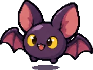 ค้างคาวถ้ำ | 32 | 564 | 259 | ดิน 1 | สัตว์ | เล็ก | 52 | ถ้ำวิญญาณ ชั้น 1, ถ้ำคริสตัล ชั้น 1 |
| แมงมุมถ้ำ | 33 | 537 | 265 | ดิน 1 | แมลง | กลาง | 55 | ถ้ำคริสตัล ชั้น 2 |
 ทหารกระดูกเฝ้าถ้ำ ทหารกระดูกเฝ้าถ้ำ | 34 | 691 | 284 | อมตะ 1 | อมตะ | กลาง | 53 | ถ้ำวิญญาณ ชั้น 2, พีระมิดทราย ชั้น 1 |
| เห็ดเรืองแสง | 34 | 535 | 259 | ไฟ 2 | พืช | เล็ก | 45 | ถ้ำคริสตัล ชั้น 1 |
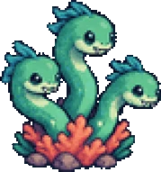 ไฮดรา | 34 | 661 | 259 | น้ำ 2 | พืช | เล็ก | 20 | ถ้ำใต้ทะเล ชั้น 1, ถ้ำใต้ทะเล ชั้น 2 |
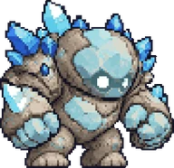 โกเลมคริสตัล | 35 | 597 | 278 | ดิน 1 | ไร้รูป | ใหญ่ | 44 | ถ้ำคริสตัล ชั้น 2 |
| ลิออรา ราชินีคลื่นเงียบ บอส | 35 | 2,000,000 | 10,000 | น้ำ 3 | สัตว์น้ำ | ใหญ่ | 29 | |
 หนูถ้ำจอมขโมย หนูถ้ำจอมขโมย | 38 | 694 | 300 | ดิน 1 | สัตว์ | เล็ก | 37 | ถ้ำคริสตัล ชั้น 1 |
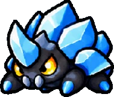 ด้วงคริสตัล | 39 | 769 | 307 | ดิน 2 | แมลง | กลาง | 58 | เหมืองคริสตัลลึก |
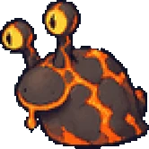 ทากลาวา | 39 | 769 | 307 | ดิน 2 | สัตว์ | เล็ก | 58 | โพรงลาวา |
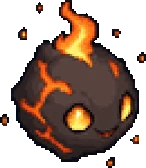 ภูตถ่านหิน | 39 | 769 | 307 | ดิน 2 | สัตว์ | เล็ก | 58 | โพรงลาวา |
| แพลงก์ตอนเรือง | 40 | 933 | 300 | น้ำ 3 | พืช | เล็ก | 28 | ถ้ำใต้ทะเล ชั้น 1 |
| กุ้งหนาม | 42 | 962 | 328 | น้ำ 1 | สัตว์น้ำ | เล็ก | 33 | ถ้ำใต้ทะเล ชั้น 1 |
| ดอกไม้ทะเล | 42 | 1,010 | 328 | น้ำ 2 | พืช | เล็ก | 20 | ถ้ำใต้ทะเล ชั้น 1 |
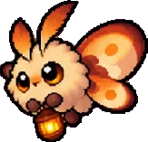 ผีเสื้อกลางคืนถือโคม | 42 | 866 | 344 | ไฟ 1 | ปีศาจ | เล็ก | 52 | เหมืองคริสตัลลึก |
| ร่างเงาจอมเวทธาตุ | 42 | 14,000 | 0 | ไร้ธาตุ 1 | ปีศาจ | กลาง | 21 | |
| ร่างเงาช่างตีเหล็ก | 42 | 14,000 | 0 | ไร้ธาตุ 1 | ปีศาจ | กลาง | 21 | |
| ร่างเงานักฆ่า | 42 | 14,000 | 0 | ไร้ธาตุ 1 | ปีศาจ | กลาง | 21 | |
| ร่างเงานักเชิดด้าย | 42 | 14,000 | 0 | ไร้ธาตุ 1 | ปีศาจ | กลาง | 8 | |
| ร่างเงานักธนูดวงดาว | 42 | 14,000 | 0 | ไร้ธาตุ 1 | ปีศาจ | กลาง | 8 | |
| ร่างเงานักเวทกระจก | 42 | 14,000 | 0 | ไร้ธาตุ 1 | ปีศาจ | กลาง | 8 | |
| ร่างเงาบาทหลวง | 42 | 14,000 | 0 | ไร้ธาตุ 1 | ปีศาจ | กลาง | 21 | |
| ร่างเงาผู้ปลูกพร | 42 | 14,000 | 0 | ไร้ธาตุ 1 | ปีศาจ | กลาง | 8 | |
| ร่างเงาพราน | 42 | 14,000 | 0 | ไร้ธาตุ 1 | ปีศาจ | กลาง | 21 | |
| ร่างเงาวิศวกรป้อม | 42 | 14,000 | 0 | ไร้ธาตุ 1 | ปีศาจ | กลาง | 8 | |
| ร่างเงาอัศวิน | 42 | 14,000 | 0 | ไร้ธาตุ 1 | ปีศาจ | กลาง | 21 | |
 ร่างเงาอัศวินตาชั่ง ร่างเงาอัศวินตาชั่ง | 42 | 14,000 | 0 | ไร้ธาตุ 1 | ปีศาจ | กลาง | 8 | |
| ลูกหมูป่า | 43 | 904 | 352 | ดิน 1 | สัตว์ | เล็ก | 49 | ที่ราบสูงสายลม |
| คนงานเหมืองผี | 44 | 1,151 | 378 | อมตะ 1 | อมตะ | กลาง | 45 | เหมืองคริสตัลลึก |
| หมูป่าเขาเดียว | 44 | 1,047 | 361 | ดิน 1 | สัตว์ | กลาง | 52 | ที่ราบสูงสายลม |
| ปูยักษ์ | 45 | 1,091 | 352 | น้ำ 1 | สัตว์น้ำ | กลาง | 54 | ถ้ำใต้ทะเล ชั้น 1 |
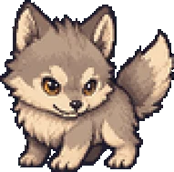 หมาป่าที่ราบ | 45 | 1,145 | 369 | ดิน 2 | มนุษย์ | กลาง | 83 | ที่ราบสูงสายลม |
| วิญญาณไฟสีฟ้า | 46 | 796 | 325 | ไฟ 2 | ปีศาจ | เล็ก | 20 | หอนาฬิกา ชั้น 4, ซากเมืองโบราณ |
 ค้างคาวไฟ ค้างคาวไฟ | 47 | 1,182 | 370 | ไฟ 2 | สัตว์ | เล็ก | 50 | โพรงลาวา, ถ้ำวิญญาณ ชั้น 2 |
 ตำราผีสิง ตำราผีสิง | 47 | 1,182 | 370 | มืด 2 | สัตว์ | เล็ก | 50 | ซากเมืองโบราณ |
| ปลาหมึกน้อย | 47 | 1,241 | 370 | น้ำ 2 | สัตว์น้ำ | เล็ก | 38 | ถ้ำใต้ทะเล ชั้น 2 |
| เห็ดยักษ์เดินได้ | 47 | 1,300 | 370 | พิษ 1 | แมลง | ใหญ่ | 58 | ป่าเห็ดยักษ์ |
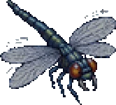 แมลงวันเหล็ก | 48 | 985 | 379 | ลม 1 | แมลง | เล็ก | 57 | รังหมูป่าใต้ดิน ชั้น 1, รังหมูป่าใต้ดิน ชั้น 2 |
| หอยงวงหนาม | 48 | 1,229 | 379 | น้ำ 1 | สัตว์น้ำ | เล็ก | 42 | ถ้ำใต้ทะเล ชั้น 2 |
 พลธนูกระดูก พลธนูกระดูก | 50 | 1,458 | 436 | อมตะ 1 | อมตะ | กลาง | 47 | ถ้ำวิญญาณ ชั้น 2, ถ้ำวิญญาณ ชั้น 3 |
| หมูป่าซากเน่า | 51 | 1,586 | 468 | อมตะ 1 | อมตะ | กลาง | 71 | รังหมูป่าใต้ดิน ชั้น 1 |
| สุนัขกระดูก | 52 | 1,642 | 479 | อมตะ 1 | อมตะ | กลาง | 63 | พีระมิดทราย ชั้น 2 |
| ทหารกระดูก | 53 | 1,699 | 490 | อมตะ 1 | อมตะ | กลาง | 82 | รังหมูป่าใต้ดิน ชั้น 1, รังหมูป่าใต้ดิน ชั้น 2 |
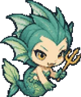 นางเงือกร้าย | 53 | 1,776 | 446 | น้ำ 2 | สัตว์น้ำ | กลาง | 48 | ถ้ำใต้ทะเล ชั้น 2 |
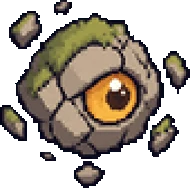 หินลอยมีตา | 53 | 1,545 | 446 | น้ำ 1 | ปีศาจ | เล็ก | 51 | หุบผาหินลอย |
 ไหผีสิง ไหผีสิง | 53 | 1,236 | 402 | วิญญาณ 2 | ไร้รูป | กลาง | 85 | ถ้ำวิญญาณ ชั้น 2 |
| หมวกเกราะผีสิง | 54 | 1,757 | 456 | มืด 1 | อมตะ | กลาง | 69 | รังหมูป่าใต้ดิน ชั้น 2, ซากเมืองโบราณ |
| กบหนองน้ำ | 55 | 1,405 | 466 | น้ำ 2 | สัตว์น้ำ | กลาง | 114 | หนองบึงหมอกเขียว |
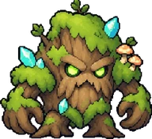 ต้นไม้โบราณ MVP | 55 | 380,000 | 89,280 | ดิน 4 | พืช | ใหญ่ | 183 | ถ้ำคริสตัล ชั้น 2 |
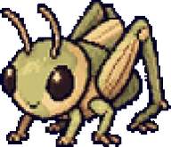 ตั๊กแตนผา | 55 | 1,487 | 466 | ไฟ 1 | แมลง | กลาง | 72 | หุบผาหินลอย |
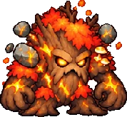 ทอร์วาน จอมทัพรากไม้ บอส | 55 | 6,000,000 | 40,000 | ดิน 4 | พืช | ใหญ่ | 33 | |
| มัมมี่ | 55 | 1,899 | 512 | อมตะ 2 | อมตะ | กลาง | 95 | พีระมิดทราย ชั้น 1, พีระมิดทราย ชั้น 2 |
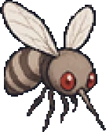 ยุงยักษ์ | 55 | 1,487 | 489 | ดิน 1 | แมลง | เล็ก | 79 | หนองบึงหมอกเขียว |
| สไลม์ราเมือก | 55 | 1,487 | 489 | ดิน 1 | ไร้รูป | เล็ก | 79 | ป่าเห็ดยักษ์ |
| หัวหน้าหมูป่าเขาเหล็ก MVP | 55 | 552,000 | 78,120 | ดิน 4 | มนุษย์ | ใหญ่ | 256 | ที่ราบสูงสายลม |
| หีบเลียนแบบ | 56 | 1,707 | 477 | ไร้ธาตุ 3 | ไร้รูป | กลาง | 63 | พีระมิดทราย ชั้น 2, พีระมิดทราย ชั้น 3 |
| ผู้พิทักษ์ศิลา | 58 | 2,002 | 499 | ดิน 2 | ไร้รูป | กลาง | 63 | วิหารลอยฟ้า |
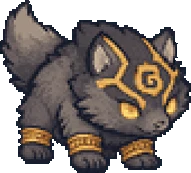 หมาป่าเฝ้าสุสาน | 58 | 2,002 | 499 | มืด 1 | สัตว์ | กลาง | 63 | พีระมิดทราย ชั้น 2, พีระมิดทราย ชั้น 3 |
 จระเข้หนอง จระเข้หนอง | 59 | 2,158 | 535 | ดิน 2 | สัตว์ | ใหญ่ | 126 | ป่าดึกดำบรรพ์, หนองบึงหมอกเขียว |
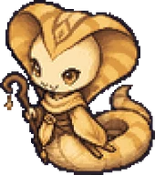 นางงูทราย | 59 | 2,252 | 510 | มืด 1 | ปีศาจ | ใหญ่ | 83 | พีระมิดทราย ชั้น 3 |
| เห็ดสปอร์พิษ | 59 | 2,065 | 535 | พิษ 1 | พืช | เล็ก | 99 | ป่าเห็ดยักษ์ |
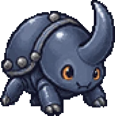 ด้วงเขาเหล็ก | 61 | 2,324 | 592 | ดิน 3 | ไร้รูป | กลาง | 126 | ป่าดึกดำบรรพ์ |
| วิญญาณน้ำแข็ง | 61 | 2,324 | 592 | น้ำ 2 | ไร้รูป | เล็ก | 126 | ธารน้ำแข็งเงียบ |
 แมวป่าน้ำแข็ง แมวป่าน้ำแข็ง | 62 | 1,849 | 576 | น้ำ 2 | สัตว์ | กลาง | 69 | ธารน้ำแข็งเงียบ, ป่าหิมะน้ำแข็ง |
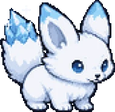 จิ้งจอกหิมะ | 63 | 2,347 | 617 | ดิน 2 | สัตว์ | กลาง | 91 | ธารน้ำแข็งเงียบ |
| ต้นไม้กินคน | 63 | 2,347 | 617 | ดิน 2 | สัตว์ | กลาง | 91 | ป่าดึกดำบรรพ์ |
| นกฮูกหิมะ | 63 | 1,902 | 588 | ลม 2 | แมลง | เล็ก | 46 | ปราสาทร้าง ชั้น 3 ลานสุสาน, ปราสาทร้าง คุกใต้ดิน ชั้น 1 |
 โกเลมหิมะ โกเลมหิมะ | 65 | 2,363 | 642 | น้ำ 2 | ไร้รูป | ใหญ่ | 90 | ป่าหิมะน้ำแข็ง |
| เจ้าหนองหมอก MVP | 65 | 947,500 | 103,950 | น้ำ 3 | สัตว์น้ำ | ใหญ่ | 166 | หนองบึงหมอกเขียว |
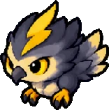 นกพายุ | 65 | 2,363 | 642 | ลม 2 | สัตว์ | กลาง | 96 | ยอดเขาพายุ |
| 65 | 2,363 | 642 | ดิน 1 | แมลง | กลาง | 90 | ยอดเขาพายุ | |
 โคมผี โคมผี | 66 | 1,701 | 625 | ไฟ 4 | ไร้รูป | เล็ก | 84 | ถ้ำวิญญาณ ชั้น 3 |
| วิญญาณไฟยักษ์ | 66 | 2,570 | 331 | วิญญาณ 2 | ปีศาจ | เล็ก | 94 | ปราสาทร้าง โถงอัศวิน ชั้น 1 |
| ปีศาจหน้ากาก | 68 | 2,561 | 651 | มืด 1 | ปีศาจ | เล็ก | 85 | ถ้ำวิญญาณ ชั้น 3 |
| ร่างเงาสะท้อน | 68 | 14,000 | 0 | ไร้ธาตุ 1 | ปีศาจ | กลาง | 14 | |
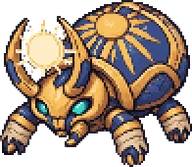 ราชาด้วงทองแห่งสุสาน MVP | 68 | 1,175,840 | 122,760 | อมตะ 4 | อมตะ | กลาง | 172 | พีระมิดทราย ชั้น 3 |
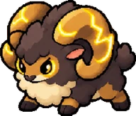 แกะเขาสายฟ้า | 70 | 2,698 | 677 | ลม 2 | สัตว์ | ใหญ่ | 101 | ยอดเขาพายุ |
| ภูตแสงดาว | 70 | 2,429 | 677 | ไฟ 1 | มนุษย์ | กลาง | 93 | วิหารลอยฟ้า |
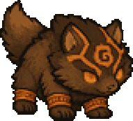 อสูรสามหัว | 70 | 26,406 | 2,713 | ไฟ 3 | สัตว์ | ใหญ่ | 159 | ปราสาทร้าง ปราสาทชั้น 2 |
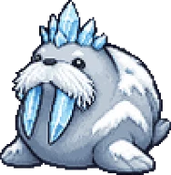 เจ้าวอลรัสธารน้ำแข็ง MVP | 71 | 300,000 | 63,800 | ไร้ธาตุ 3 | สัตว์ | ใหญ่ | 269 | ธารน้ำแข็งเงียบ |
| ผู้พิทักษ์หิน | 71 | 3,251 | 738 | มืด 1 | มนุษย์ | กลาง | 88 | วิหารลอยฟ้า |
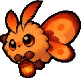 หิ่งห้อยเพลิง | 71 | 2,366 | 738 | ไฟ 1 | แมลง | เล็ก | 93 | หอนาฬิกา ห้องใต้ดิน ชั้น 2 |
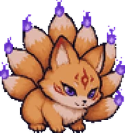 จิ้งจอกเก้าหาง | 72 | 2,422 | 752 | ไฟ 3 | สัตว์ | กลาง | 95 | ถ้ำวิญญาณ ชั้น 3 |
| ไรแลน | 72 | 600,000 | 0 | ไร้ธาตุ 1 | ปีศาจ | กลาง | 14 | |
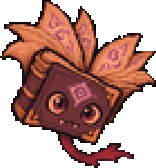 ตำรางับ | 74 | 2,855 | 780 | ไร้ธาตุ 3 | ไร้รูป | เล็ก | 61 | หอนาฬิกา ชั้น 1, หอนาฬิกา ชั้น 2 |
| ภูตผ้าห่อศพ | 77 | 4,415 | 906 | อมตะ 4 | อมตะ | ใหญ่ | 80 | ปราสาทร้าง ชั้น 1 โบสถ์ร้าง, ปราสาทร้าง ชั้น 3 ลานสุสาน |
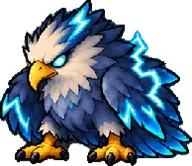 พญาอินทรีอัสนี MVP | 78 | 378,000 | 184,140 | ลม 4 | สัตว์ | ใหญ่ | 287 | ยอดเขาพายุ |
 หมูป่านักธนู หมูป่านักธนู | 78 | 3,474 | 880 | ดิน 1 | มนุษย์ | กลาง | 67 | หอนาฬิกา ห้องใต้ดิน ชั้น 2, รังหมูป่าใต้ดิน ชั้น 2 |
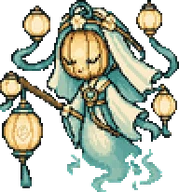 แม่โคมวิญญาณ MVP | 79 | 324,000 | 183,744 | ไฟ 3 | ปีศาจ | กลาง | 254 | ถ้ำวิญญาณ ชั้น 3 |
| ปีศาจหอลม | 80 | 3,631 | 869 | ลม 3 | ปีศาจ | กลาง | 64 | ปราสาทร้าง ชั้น 2 ทางเดินหอลม |
| ฤๅษีซากศพ | 80 | 4,720 | 955 | อมตะ 4 | อมตะ | ใหญ่ | 88 | ปราสาทร้าง ชั้น 1 โบสถ์ร้าง, ปราสาทร้าง ชั้น 3 ลานสุสาน |
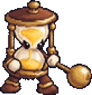 นาฬิกาทรายเดินได้ | 81 | 4,505 | 1,001 | ดิน 2 | ไร้รูป | กลาง | 91 | หอนาฬิกา ชั้น 2, หอนาฬิกา ชั้น 4 |
| หมูป่านักรบเกราะเพลิง | 81 | 4,077 | 954 | ไฟ 2 | มนุษย์ | ใหญ่ | 101 | หอนาฬิกา ห้องใต้ดิน ชั้น 2 |
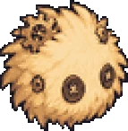 ปุยฝุ่นเฟือง | 82 | 3,498 | 970 | ลม 1 | พืช | เล็ก | 68 | หอนาฬิกา ชั้น 1, หอนาฬิกา ชั้น 2 |
| พลธนูเกราะทมิฬ | 82 | 4,809 | 970 | มืด 2 | ปีศาจ | กลาง | 63 | ปราสาทร้าง ชั้น 2 ทางเดินหอลม, ปราสาทร้าง โถงอัศวิน ชั้น 1 |
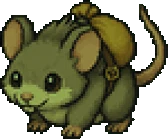 หนูคุกพิษ | 82 | 3,935 | 970 | พิษ 2 | สัตว์ | เล็ก | 88 | ปราสาทร้าง คุกใต้ดิน ชั้น 2 |
| แม่มดไม้กวาด | 86 | 6,040 | 1,035 | มืด 1 | มนุษย์ | กลาง | 61 | หอนาฬิกา ชั้น 1 |
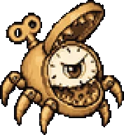 นาฬิกาปลุกกล | 88 | 5,664 | 1,069 | ไร้ธาตุ 3 | ไร้รูป | กลาง | 106 | หอนาฬิกา ชั้น 3, หอนาฬิกา ชั้น 4 |
| ซอมบี้นักโทษ | 89 | 6,902 | 1,194 | อมตะ 3 | อมตะ | กลาง | 89 | ปราสาทร้าง คุกใต้ดิน ชั้น 1 |
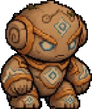 ผู้คุมหอนาฬิกา | 90 | 6,425 | 1,103 | ไร้ธาตุ 4 | ไร้รูป | ใหญ่ | 96 | หอนาฬิกา ชั้น 1, หอนาฬิกา ชั้น 2 |
| นักโทษกระดูก | 91 | 8,378 | 1,342 | อมตะ 3 | อมตะ | กลาง | 95 | ปราสาทร้าง คุกใต้ดิน ชั้น 2 |
| จอมเวทชรา | 92 | 7,780 | 1,238 | ไร้ธาตุ 4 | มนุษย์ | ใหญ่ | 72 | หอนาฬิกา ชั้น 2, หอนาฬิกา ชั้น 4 |
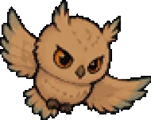 เจ้านกฮูกหอระฆัง | 92 | 7,780 | 1,238 | ไร้ธาตุ 3 | ปีศาจ | ใหญ่ | 80 | หอนาฬิกา ชั้น 4 |
| ผู้คุมอยุติธรรม | 95 | 8,087 | 1,292 | มืด 2 | อมตะ | กลาง | 76 | ปราสาทร้าง คุกใต้ดิน ชั้น 1, ปราสาทร้าง คุกใต้ดิน ชั้น 2 |
| เงาราชันย์ | 96 | 46,255 | 4,954 | อมตะ 4 | ปีศาจ | ใหญ่ | 145 | ปราสาทร้าง ชั้น 3 ลานสุสาน |
| ราชันย์อสูรปราสาทร้าง MVP | 96 | 1,190,900 | 428,544 | อมตะ 4 | ปีศาจ | ใหญ่ | 330 | ปราสาทร้าง ชั้น 3 ลานสุสาน |
| นักบวชเงามืด | 98 | 10,843 | 1,483 | อมตะ 4 | ปีศาจ | กลาง | 56 | ปราสาทร้าง ชั้น 3 ลานสุสาน |
| ปีศาจโซ่ตรวน | 98 | 9,939 | 1,349 | ไร้ธาตุ 2 | ปีศาจ | ใหญ่ | 109 | ปราสาทร้าง คุกใต้ดิน ชั้น 1, ปราสาทร้าง คุกใต้ดิน ชั้น 2 |
| สาวใช้ปราสาทร้าง | 100 | 9,233 | 1,387 | ไร้ธาตุ 3 | มนุษย์ | กลาง | 93 | ปราสาทร้าง โถงอัศวิน ชั้น 1, ปราสาทร้าง โถงอัศวิน ชั้น 2 |
| เพชฌฆาตเงา | 102 | 12,408 | 1,565 | ไร้ธาตุ 2 | มนุษย์ | ใหญ่ | 440 | ปราสาทร้าง คุกใต้ดิน ชั้น 2 |
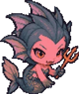 นางรำต้องสาป | 105 | 61,350 | 4,666 | ไร้ธาตุ 3 | มนุษย์ | กลาง | 91 | ปราสาทร้าง คุกใต้ดิน ชั้น 2 |
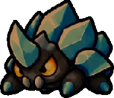 ด้วงเปลือกดิน | 107 | 14,944 | 1,937 | ดิน 2 | แมลง | กลาง | 101 | หอนาฬิกา ห้องใต้ดิน ชั้น 2 |
| ดาบเขี้ยวอสูร | 114 | 59,000 | 3,474 | มืด 3 | ไร้รูป | กลาง | 87 | ปราสาทร้าง ปราสาทชั้น 2 |
| อัศวินเกราะทมิฬ | 115 | 21,981 | 2,246 | มืด 2 | มนุษย์ | ใหญ่ | 89 | ปราสาทร้าง โถงอัศวิน ชั้น 1, ปราสาทร้าง โถงอัศวิน ชั้น 2 |
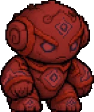 อัศวินโลหิต | 116 | 68,500 | 4,776 | มืด 4 | ไร้รูป | ใหญ่ | 122 | ปราสาทร้าง โถงอัศวิน ชั้น 2 |
| อัศวินศพ | 118 | 27,456 | 2,866 | อมตะ 1 | อมตะ | ใหญ่ | 125 | ปราสาทร้าง โถงอัศวิน ชั้น 1, ปราสาทร้าง โถงอัศวิน ชั้น 2 |
| นักดาบพเนจร | 120 | 20,806 | 2,652 | ลม 1 | ปีศาจ | กลาง | 64 | ปราสาทร้าง ปราสาทชั้น 2 |
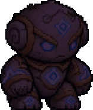 อัศวินม้าอเวจี | 122 | 34,686 | 3,071 | มืด 4 | มนุษย์ | ใหญ่ | 102 | ปราสาทร้าง โถงอัศวิน ชั้น 1, ปราสาทร้าง โถงอัศวิน ชั้น 2 |
| ดาบอาถรรพ์ | 130 | 70,000 | 5,147 | มืด 4 | ไร้รูป | ใหญ่ | 73 | ปราสาทร้าง โถงอัศวิน ชั้น 2, ปราสาทร้าง ปราสาทชั้น 2 |